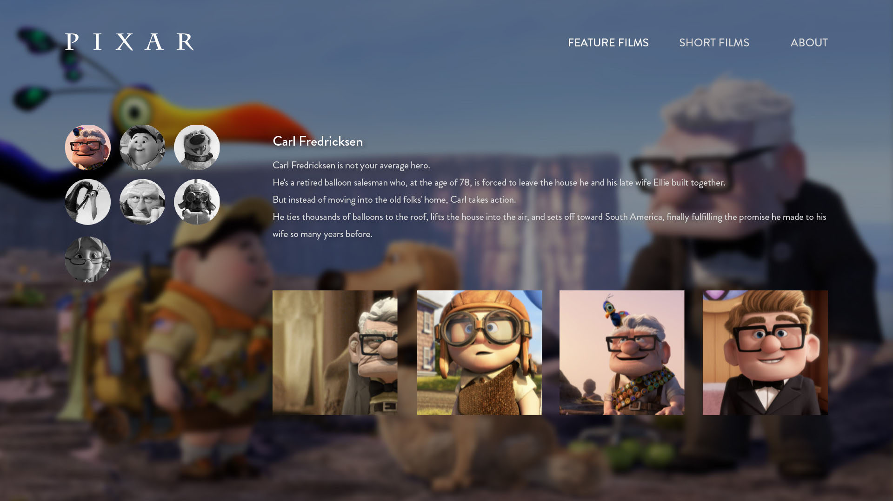
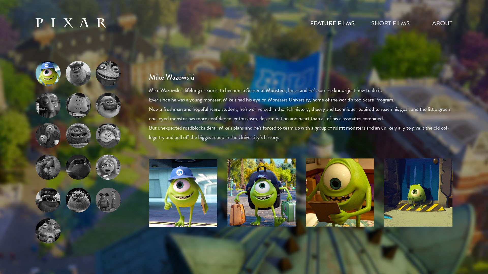
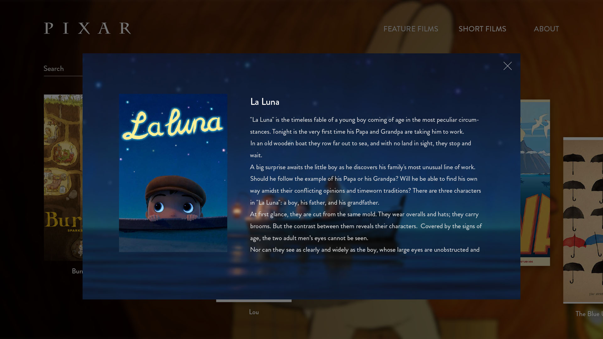
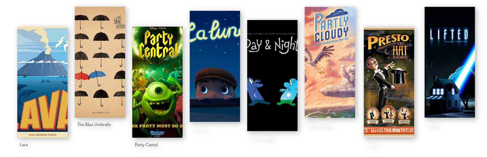
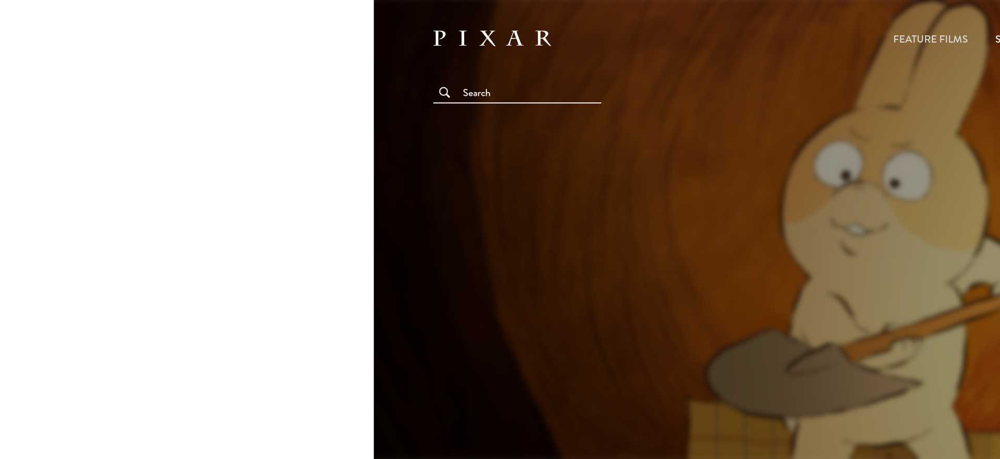

Component : React-router-dom
react-router-dom을 이용하여 새로 고침 없이 콘텐츠를 빠르게 이동할 수 있도록 제작했습니다. 콘텐츠 이동 시 상단 URL이 해당 소스에 맞춰 변경됨을 확인할 수 있습니다. 상단 헤더에는 현재 페이지 위치를 알아볼 수 있도록 스타일을 넣어주었습니다.

react-router-dom을 이용하여 새로 고침 없이 콘텐츠를 빠르게 이동할 수 있도록 제작했습니다. 콘텐츠 이동 시 상단 URL이 해당 소스에 맞춰 변경됨을 확인할 수 있습니다. 상단 헤더에는 현재 페이지 위치를 알아볼 수 있도록 스타일을 넣어주었습니다.
이번 사이트의 핵심 정보인 데이터를 JSON에 영화별로 직접 입력했습니다. 24개의 장편 영화와 각 영화 평균 10명의 캐릭터, 22편의 단편 영화의 데이터를 하나의 JSON에 담아 방대한 양의 정보를 효율적으로 처리하였습니다.


24개의 영화, 252개의 캐릭터, 캐릭터별로 4장씩 1008장의 사진을 JSON에 배열화시켜 입력 후에 Component 형태의 페이지로 구성하였습니다. 기존 픽사 사이트에서는 캐릭터 소개가 한 페이지에 쭉 나열되어 있었습니다. 그렇기 때문에 16명의 캐릭터를 소개하는 영화의 경우는 스크롤이 끊임없이 길어지는 불편함이 발생했습니다. 이를 개선하여 좌측에 캐릭터 얼굴 사진은 한 번에 배치, 특정 캐릭터를 찾기 위해 기나긴 스크롤을 한참 내려야 하는 불편함을 개선했습니다.
트레일러 영상을 데이터화시켜 각 영화에 맞게 트레일러를 팝업창으로 뜨도록 제작했습니다. 영상 태그를 데이터화 시킬 경우 태그가 아닌 문자열로 인식하기 때문에 태그화 시키는 방식도 함께 사용해 주었습니다.
픽사는 많은 양의 작품을 보유하고 있습니다. 그러나 기존 사이트에서는 원하는 영화의 정보를 얻기 위해 이 목록들 속에서 일일이 찾아보아야 했습니다. 그렇기 때문에 사이트 리뉴얼 시 원하는 영화를 찾기 위한 검색 기능이 있으면 좋겠다고 판단했습니다. 검색창의 값을 가져와 검색한 영화의 이름과 같은 정보를 가진 콘텐츠들만 필터 시켜 보여주었습니다. 영화 이름의 첫 글자는 모두 대문자로 되어있기 때문에 소문자로 검색하더라도 정상적으로 검색할 수 있도록 구현했습니다.

연결된 페이지에서 특정 값을 넘겨주고 받는 형식의 useParams를 이용했습니다. 클릭한 영화와 같은 이름을 가진 값만을 필터링하여 보여주는 방식으로 단편 영화 소개 팝업창을 만들었습니다.


가로 스크롤 기능과 함께 영화 목록을 지그재그 형태로 스타일을 넣어주었습니다. 단순히 영화 목록을 나열하는 것이 아닌 보는 즐거움을 더했습니다.
About 페이지 취지에 맞게 Google map API를 이용하여 픽사 본사의 위치를 직접 확인할 수 있게 만들어주었습니다.